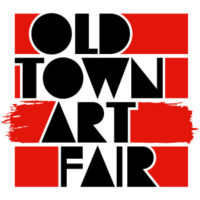

Old Town Art Fair
Chicago’s legendary Old Town Art Fair returns featuring the popular Garden Walk, a selection of live music, and interactive entertainment for the entire family to enjoy. There will be 200+ nationally acclaimed artists and an estimated 30,000 art lovers strolling through the Fair throughout the weekend. Organized by the non-profit Old Town Triangle Association and completely volunteer-run, the Old Town Art Fair will take place, rain or shine, Saturday, June 13, from 10am-7pm, and Sunday, June 14, from 10am-6pm. The Old Town Art Fair main gate is located at the intersection of Lincoln and Wisconsin streets; the Wells Street Art Festival is a separate event.
The Old Town Art Fair features a dynamic mix of artists working across media, including paintings, sculpture, photography, printmaking, ceramics, glass, fiber, jewelry, and more, selected by a jury of local art professionals, including gallery owners, museum curators, and artists.
Along with the visual art offerings, the Garden Walk—an attendee-favorite year after year—offers visitors the opportunity to tour over 65 gardens this year, including a record number of 12 new locations and counting, many of which are private and only viewable during the Art Fair. A Garden Tour map with garden descriptions will be available soon for art fair visitors to explore the neighborhood, see creative spaces and learn about the historic homes as well.